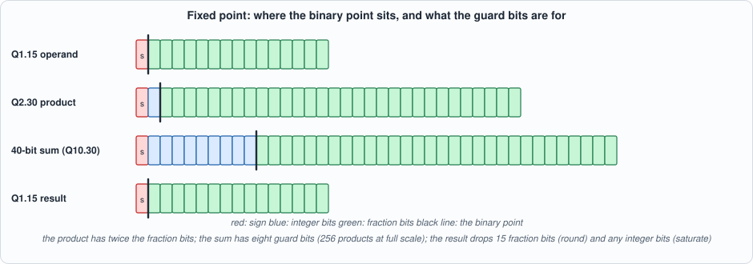
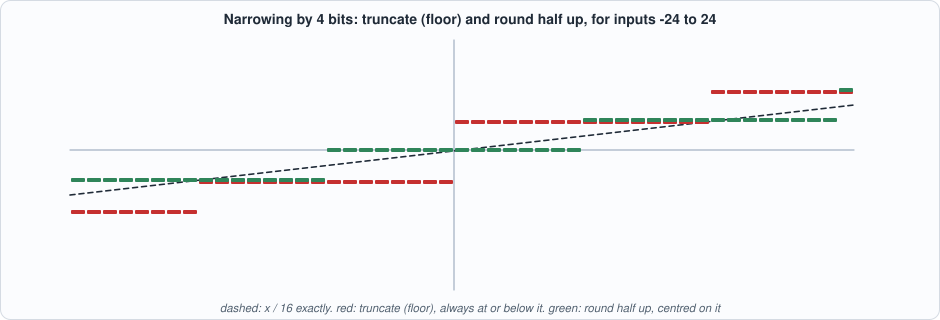
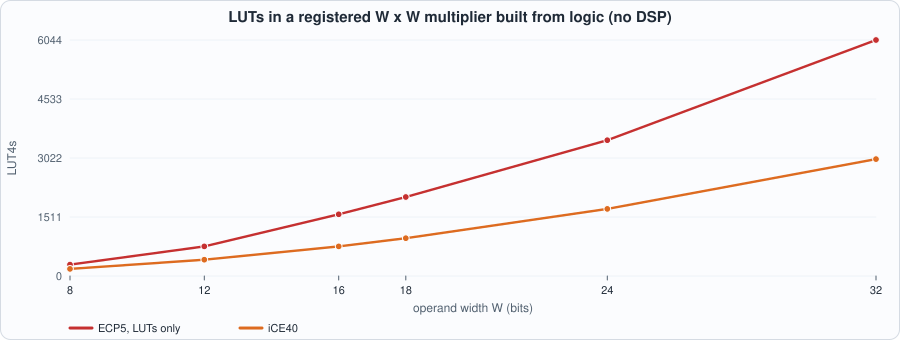
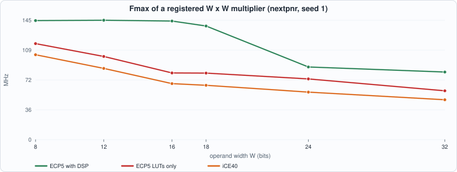
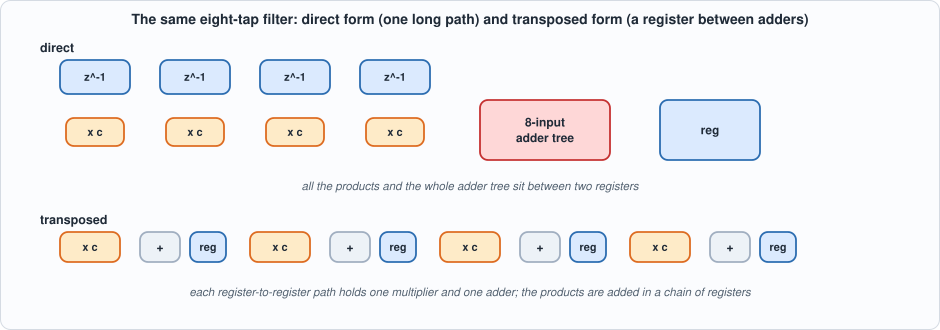
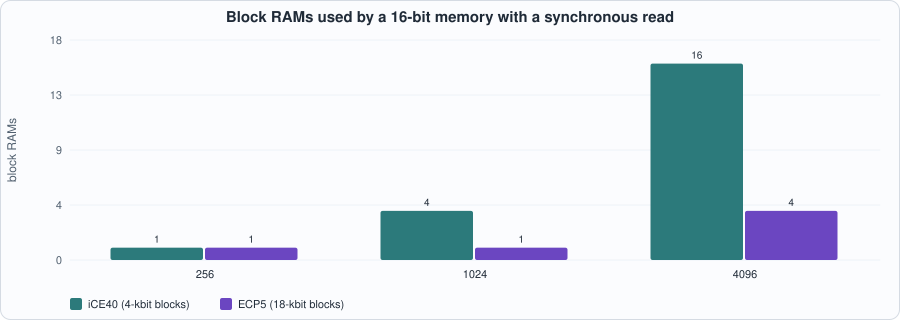

5. Resources: Fixed-Point Arithmetic, DSP Blocks, Block RAM, and Moving Registers¶
About the kestrels in this picture
- American kestrel (Falco sparverius) is the smallest falcon in North America and is found from Alaska to South America. The sexes differ in plumage: males have blue-grey wings, females are barred rufous. It hunts insects and small vertebrates from perches and by hovering.
- Nankeen kestrel (Falco cenchroides) is found across Australia and nearby islands. It hovers over open country and grassland, and often hunts along roadsides and fields.
The scene is imaginary and the birds are stylised drawings.
What you will see: how a number is written in fixed point and what a multiply, an accumulate, a round and a saturate each do to it, with every input value of the narrowing circuit tested; what a multiplier costs in logic against in a DSP block, measured on two device families; how the same memory lands in LUTs, distributed RAM or block RAM depending on one line of how it is read; and an 8-tap filter written two ways with identical outputs whose area and clock speed differ by a factor of two.
What you need to know first: Chapters 1 to 4. A signed binary number in two's complement is assumed.
What this chapter builds: rtl/fxp.sv (fx_round_sat, fx_mac), rtl/fir.sv (fir_direct, fir_transposed), rtl/ram_style.sv, rtl/mulreg.sv, the integer-arithmetic models in model/fx_gold.py, the testbenches tb/rs_tb.sv, tb/mac_tb.sv, tb/fir_tb.sv, tb/ram_tb.sv, and tools/ch05_example_a.py, tools/ch05_example_b.py, tools/ch05_run.py, tools/mut_ch05.py.
Fixed-point numbers¶
A fixed-point number is an integer with an agreed position of the binary point. Q1.15 is a signed 16-bit value x that means x / 2^15: a sign bit and 15 fraction bits, the range [-1, 1) in steps of 2^-15. In general Qm.n has m integer bits (counting the sign) and n fraction bits. The hardware does only integer arithmetic; the point is in the designer's head and in the shifts.

Figure 5.1: the formats along a multiply-accumulate. The product of two Q1.15 numbers is Q2.30; adding products needs guard bits; the result is brought back to Q1.15 by dropping 15 fraction bits.- A product of two Q1.15 numbers is an exact Q2.30 number (32 bits). Nothing is lost.
- A sum of products grows: 256 products at full scale need 8 more integer bits, so the accumulator here is 40 bits. These are guard bits: they make overflow of the sum impossible for up to 256 terms, and leave the single place where the result can go out of range (the narrowing at the end) under control.
- Narrowing back to Q1.15 drops 15 fraction bits (an error, controlled by the rounding rule) and possibly some integer bits (an overflow, controlled by the saturation rule).
Rounding and saturation¶
Truncation keeps the high bits and drops the low ones; for two's complement that is a floor (round toward minus infinity), so it is biased: always at or below the exact value. Round half up adds half an output step before dropping: unbiased on average, at the price of one adder. Saturation replaces an out-of-range value by the largest or smallest representable one; wrap keeps the low bits, which is free and which turns an overflow into a value of the wrong sign.

Figure 5.2: narrowing by 4 bits. Truncation is a staircase that lies below the line; rounding is centred on it.// verilator lint_off DECLFILENAME
// Chapter 5: fixed-point building blocks.
// Q1.15 operands: a signed 16-bit value x means x / 2^15. A product of two Q1.15 numbers is Q2.30 (32 bits); a sum of products needs guard bits (the accumulator is 40 bits: eight bits of headroom, 256 products at full scale); the result is brought back to Q1.15 by shifting right 15 places.
// fx_round_sat: a signed IW-bit value, scaled down by 2^SH to an OW-bit signed result. RND = 0 truncates (floor: rounds toward minus infinity), RND = 1 rounds half up (adds half an output step first). SAT = 1 clamps to the largest/smallest OW-bit value; SAT = 0 wraps (keeps the low bits), which is the cheap option and a silent disaster on overflow.
module fx_round_sat #(parameter int IW = 40, parameter int OW = 16, parameter int SH = 15, parameter int RND = 1, parameter int SAT = 1) (
input logic signed [IW-1:0] x, output logic signed [OW-1:0] y);
localparam int EW = IW + 1; // one extra bit so that adding the rounding constant cannot overflow
localparam logic signed [EW-1:0] HALF = (RND != 0 && SH > 0) ? (EW'(1) <<< (SH - 1)) : EW'(0);
localparam logic signed [EW-1:0] MAXV = (EW'(1) <<< (OW - 1)) - EW'(1);
localparam logic signed [EW-1:0] MINV = -(EW'(1) <<< (OW - 1));
logic signed [EW-1:0] r, s;
always_comb begin
r = EW'(x) + HALF;
s = r >>> SH;
if (SAT != 0) begin
if (s > MAXV) y = MAXV[OW-1:0];
else if (s < MINV) y = MINV[OW-1:0];
else y = s[OW-1:0];
end else y = s[OW-1:0];
end
endmodule
// fx_mac: a three-stage multiply-accumulate. Stage 1 registers the operands, stage 2 the product, stage 3 the accumulator. clr starts a new sum (acc := product if en, else 0); en adds the product to the sum. acc is the full 40-bit sum; y is acc rounded and saturated to Q1.15.
module fx_mac #(parameter int RND = 1, parameter int SAT = 1) (
input logic clk, input logic rst, input logic en, input logic clr, input logic signed [15:0] a, input logic signed [15:0] b,
output logic signed [39:0] acc, output logic signed [15:0] y);
logic signed [15:0] ra, rb; logic ren, rclr, pen, pclr; logic signed [31:0] p;
always_ff @(posedge clk) begin
if (rst) begin ra <= '0; rb <= '0; ren <= 1'b0; rclr <= 1'b0; p <= '0; pen <= 1'b0; pclr <= 1'b0; acc <= '0; end
else begin
ra <= a; rb <= b; ren <= en; rclr <= clr;
p <= ra * rb; pen <= ren; pclr <= rclr;
if (pclr) acc <= pen ? 40'(p) : 40'sd0;
else if (pen) acc <= acc + 40'(p);
end
end
fx_round_sat #(.IW(40), .OW(16), .SH(15), .RND(RND), .SAT(SAT)) rs (.x(acc), .y(y));
endmodule
fx_round_sat is combinational. One extra bit is carried so that adding the rounding constant cannot itself overflow: rounding a value just under the maximum can produce an out-of-range result (2,047 rounded to 6 bits with a shift of 4 is 128, which saturates to 31 and, with wrap, becomes 0). fx_mac has three stages: operands registered, product registered, accumulator registered; clr starts a new sum, en adds the product.
The models and the tests¶
model/fx_gold.py is integer arithmetic only: round_sat (Python's >> on negative integers is a floor, like the hardware's arithmetic shift), a cycle-by-cycle MAC class, a fir_run that states the filter as its definition y[k] = sum C[i] x[k-2-i], and ram_run.
#!/usr/bin/env python3
"""Chapter 5: independent models of the fixed-point and memory designs. Nothing here reads the RTL; everything is integer arithmetic.
round_sat a signed IW-bit value scaled down by 2**SH into an OW-bit signed result: truncate (floor) or round half up, saturate or wrap
MAC the three-stage multiply-accumulate, cycle by cycle
fir the 8-tap filter: y[k] = sum C[i] * x[k - 2 - i] (two cycles of latency), the accumulator rounded and saturated
ram the three read styles: asynchronous (latency 0), synchronous (1), synchronous with an output register (2)
Q notation: Qm.n is a signed number of m + n bits with n fractional bits; Q1.15 (16 bits) is the number x / 2**15 in [-1, 1)."""
import random
def sx(v, w): v &= (1 << w) - 1; return v - (1 << w) if v >> (w - 1) else v
def round_sat(x, iw, ow, sh, rnd, sat):
assert -(1 << (iw - 1)) <= x < (1 << (iw - 1))
r = x + ((1 << (sh - 1)) if rnd and sh > 0 else 0); s = r >> sh # Python's >> on negative integers floors, like an arithmetic shift
lo, hi = -(1 << (ow - 1)), (1 << (ow - 1)) - 1
return max(lo, min(hi, s)) if sat else sx(s, ow)
COEF = [-1243, 2115, 6410, 11870, 11870, 6410, 2115, -1243] # a symmetric 8-tap low-pass in Q1.15 (sum = 38304 = 1.169 in Q1.15: not unity gain, on purpose, so that overflow is possible)
class MAC:
"""Stage 1 registers the operands, stage 2 the product, stage 3 the accumulator. clr starts a new sum (acc := product if en else 0); en adds the product."""
def __init__(s, rnd=1, sat=1, aw=40): s.ra = s.rb = 0; s.ren = s.rclr = 0; s.p = 0; s.pen = s.pclr = 0; s.acc = 0; s.rnd, s.sat, s.aw = rnd, sat, aw
def out(s): return (s.acc, round_sat(s.acc, s.aw, 16, 15, s.rnd, s.sat))
def step(s, en, clr, a, b):
nacc = s.acc
if s.pclr: nacc = s.p if s.pen else 0
elif s.pen: nacc = sx(s.acc + s.p, s.aw)
s.acc = nacc
s.pen, s.pclr = s.ren, s.rclr; s.p = s.ra * s.rb
s.ra, s.rb, s.ren, s.rclr = a, b, en, clr
def mac_run(stim, rnd=1, sat=1):
m = MAC(rnd, sat); res = []
for en, clr, a, b in stim: res.append(m.out()); m.step(en, clr, a, b)
return res
def fir_run(xs, rnd=1, sat=1, coef=COEF):
out = []
for k in range(len(xs)):
acc = sum(c * (xs[k - 2 - i] if k - 2 - i >= 0 else 0) for i, c in enumerate(coef)); out.append((acc, round_sat(acc, 40, 16, 15, rnd, sat)))
return out
def ram_run(style, ops, depth):
"""ops: per cycle (we, waddr, wdata, raddr). Returns the rdata seen before each clock edge. A synchronous read returns the OLD contents when it reads the address being written (read-first)."""
mem = [0] * depth; r1 = 0; r2 = 0; res = []
for we, wa, wd, ra in ops:
res.append(mem[ra] if style == 0 else (r1 if style == 1 else r2)); nr1 = mem[ra]
if we: mem[wa] = wd
r2 = r1; r1 = nr1
return res
def rs_vectors(path, iw, ow, sh, rnd, sat):
"""Every input of an IW-bit signed value, one line each: x (hex, IW bits) y (hex, OW bits)."""
n = 0
with open(path, "w") as f:
for x in range(-(1 << (iw - 1)), 1 << (iw - 1)):
f.write(f"{x & ((1 << iw) - 1):0{(iw + 3) // 4}x}{round_sat(x, iw, ow, sh, rnd, sat) & ((1 << ow) - 1):0{(ow + 3) // 4}x}\n"); n += 1
return n
def mac_stim(seed, n, mode="random"):
rng = random.Random(seed); out = []
for k in range(n):
if mode == "overflow": a, b = rng.choice([32767, -32768, 30000, -30000]), rng.choice([32767, -32768, 30000, -30000])
else: a, b = rng.randint(-32768, 32767), rng.randint(-32768, 32767)
out.append((int(rng.random() < 0.8), int(rng.random() < (0.02 if mode == "overflow" else 0.12)), a, b))
return out
def write_mac(path, stim, res):
"""One line per cycle: en clr a(4 hex) b(4 hex) | acc (10 hex, 40 bits) y (4 hex)."""
with open(path, "w") as f:
for (en, clr, a, b), (acc, y) in zip(stim, res): f.write(f"{en}{clr}{a & 0xFFFF:04x}{b & 0xFFFF:04x}{acc & ((1 << 40) - 1):010x}{y & 0xFFFF:04x}\n")
def write_fir(path, xs, res):
with open(path, "w") as f:
for x, (acc, y) in zip(xs, res): f.write(f"{x & 0xFFFF:04x}{y & 0xFFFF:04x}\n")
def write_ram(path, ops, res, w):
with open(path, "w") as f:
for (we, wa, wd, ra), r in zip(ops, res): f.write(f"{we}{wa:04x}{wd:0{(w + 3) // 4}x}{ra:04x}{r:0{(w + 3) // 4}x}\n")
def ram_ops(seed, n, depth, w):
rng = random.Random(seed); ops = []
for _ in range(n):
wa = rng.randrange(depth); ra = wa if rng.random() < 0.2 else rng.randrange(depth); ops.append((int(rng.random() < 0.5), wa, rng.getrandbits(w), ra))
return ops
fx_round_satis tested on every input. The testbenchtb/rs_tb.svreads one line per possible input from the model and checks all of them: 4,096 inputs for a 12-to-6-bit narrowing, 1,024 for 10 to 10 bits (shift 0), 16,384 for 14 to 8 bits (shift 5), each in four modes (truncate or round, wrap or saturate). Exhaustive testing is possible only because the widths are small; the 40-to-16-bit instance used in the MAC is the same code with different constants, and is exercised by the MAC and FIR tests below.fx_macis tested cycle by cycle: random operands, and an overflow-heavy mix of full-scale values, in all four modes, compared on the 40-bit accumulator and the rounded output.
// Chapter 5 testbench for fx_round_sat: EVERY input value (exhaustive), compared with out/rs_vec.hex written by model/fx_gold.py. Defines: IW OW SH RND SAT (the same values the model was run with).
`timescale 1ns/1ps
`ifndef IW
`define IW 12
`endif
`ifndef OW
`define OW 6
`endif
`ifndef SH
`define SH 4
`endif
`ifndef RND
`define RND 1
`endif
`ifndef SAT
`define SAT 1
`endif
module rs_tb;
localparam int IW = `IW, OW = `OW, N = 1 << IW, YH = (OW + 3) / 4;
logic signed [IW-1:0] x; logic signed [OW-1:0] y; logic [47:0] vec [0:N-1]; int errs = 0, k;
fx_round_sat #(.IW(IW), .OW(OW), .SH(`SH), .RND(`RND), .SAT(`SAT)) dut (.x(x), .y(y));
initial begin
$readmemh("out/rs_vec.hex", vec);
for (k = 0; k < N; k++) begin
x = vec[k][YH*4 +: IW]; #1;
if (y !== vec[k][OW-1:0]) begin errs++; if (errs < 6) $display("MISMATCH x = %0d: got %0d expected %0d", x, y, $signed(vec[k][OW-1:0])); end
end
if (errs == 0) $display("PASS: all %0d inputs, IW=%0d OW=%0d SH=%0d RND=%0d SAT=%0d", N, IW, OW, `SH, `RND, `SAT); else $display("FAIL: %0d of %0d inputs wrong", errs, N);
$finish;
end
endmodule
// Chapter 5 testbench for fx_mac: per-cycle stimulus (en, clr, a, b) and the expected 40-bit accumulator and rounded 16-bit output from the golden model, compared every cycle. Defines: RND SAT NC.
`timescale 1ns/1ps
`ifndef RND
`define RND 1
`endif
`ifndef SAT
`define SAT 1
`endif
`ifndef NC
`define NC 3000
`endif
module mac_tb;
localparam int NC = `NC;
logic clk = 0, rst = 1, en = 0, clr = 0; logic signed [15:0] a = '0, b = '0, y; logic signed [39:0] acc; logic [95:0] vec [0:NC-1]; int errs = 0, k;
fx_mac #(.RND(`RND), .SAT(`SAT)) dut (.clk(clk), .rst(rst), .en(en), .clr(clr), .a(a), .b(b), .acc(acc), .y(y));
always #5 clk = ~clk;
initial begin
$readmemh("out/mac_vec.hex", vec);
repeat (3) @(negedge clk); rst = 0;
for (k = 0; k < NC; k++) begin
@(negedge clk); en = vec[k][92]; clr = vec[k][88]; a = vec[k][87:72]; b = vec[k][71:56]; #1;
if (acc !== vec[k][55:16] || y !== vec[k][15:0]) begin errs++; if (errs < 6) $display("MISMATCH cycle %0d: acc %0d/%0d y %0d/%0d", k, acc, $signed(vec[k][55:16]), y, $signed(vec[k][15:0])); end
end
if (errs == 0) $display("PASS: %0d cycles, RND=%0d SAT=%0d", NC, `RND, `SAT); else $display("FAIL: %0d problems", errs);
$finish;
end
endmodule
Running example A: what arithmetic costs¶
// Chapter 5: a registered signed multiplier, for measuring what a multiplier costs. Operands registered, product registered: latency 2.
module mulreg #(parameter int W = 16) (input logic clk, input logic signed [W-1:0] a, input logic signed [W-1:0] b, output logic signed [2*W-1:0] p);
logic signed [W-1:0] ra, rb;
always_ff @(posedge clk) begin ra <= a; rb <= b; p <= ra * rb; end
endmodule
#!/usr/bin/env python3
"""Chapter 5, example A: what arithmetic costs. (1) A registered multiplier of W x W bits on the ECP5 target with the DSP blocks (Yosys default) and without (synth_ecp5 -nodsp: LUTs and carry cells), and on iCE40 (which has no DSP in this device): LUTs, carry cells, DSP blocks, flip-flops, Fmax. (2) The multiply-accumulate of Chapter 5 the same two ways. (3) What rounding and saturation add to a 40-to-16-bit narrowing, in LUTs. Usage: ch05_example_a.py"""
import os, re, subprocess, sys, concurrent.futures as cf
sys.path.insert(0, os.path.dirname(os.path.abspath(__file__))); import flow
R = flow.ROOT
def build(files, top, family, tag, params=None, nodsp=False):
js = f"out/{tag}.json"; ps = [f"chparam -set {k} {v} {top}" for k, v in (params or {}).items()]
syn = {"ecp5": "synth_ecp5 " + ("-nodsp " if nodsp else "") + f"-top {top} -json {js}", "ice40": f"synth_ice40 -top {top} -json {js}"}[family]
p = subprocess.run(["yosys", "-p", "; ".join(["read_verilog -sv " + " ".join(files)] + ps + [syn, "stat"]), "-l", f"out/{tag}_synth.log"], cwd=R, capture_output=True, text=True)
log = open(os.path.join(R, "out", f"{tag}_synth.log")).read(); sec = log.rsplit("Number of cells", 1)[-1] if "Number of cells" in log else log
c = {m.group(1): int(m.group(2)) for m in re.finditer(r"^\s+(\$?\w+)\s+(\d+)\s*$", sec, re.M)}
ff = c.get("TRELLIS_FF", 0) + sum(c.get(k, 0) for k in ("SB_DFF", "SB_DFFE", "SB_DFFESR", "SB_DFFSR"))
return {"js": js, "lut": c.get("LUT4", 0) + c.get("SB_LUT4", 0), "carry": c.get("CCU2C", 0) + c.get("SB_CARRY", 0), "dsp": c.get("MULT18X18D", 0), "ff": ff}
def fmax(js, family, freq): return flow.pnr(js, family, freq, 1)["fmax"]
def job(a):
kind, W, how = a; fam = "ice40" if how == "ice40" else "ecp5"; tag = f"mr_{W}_{how}"
r = build(["rtl/mulreg.sv"], "mulreg", fam, tag, {"W": W}, nodsp=(how == "lut")); r["fmax"] = fmax(r["js"], fam, 300); return a, r
if __name__ == "__main__":
print("== 1. a registered W x W signed multiplier (operands and product registered); nextpnr seed 1, asked for 300 MHz")
print(f" {'W':>3s} | {'ECP5 + DSP: DSP':>15s} {'LUT':>5s} {'Fmax':>9s} | {'ECP5 LUTs only: LUT':>19s} {'carry':>6s} {'Fmax':>9s} | {'iCE40: LUT':>11s} {'carry':>6s} {'Fmax':>9s}")
jobs = [("m", W, h) for W in (8, 12, 16, 18, 24, 32) for h in ("dsp", "lut", "ice40")]
with cf.ThreadPoolExecutor(4) as ex: res = dict(ex.map(job, jobs))
for W in (8, 12, 16, 18, 24, 32):
d, l, i = res[("m", W, "dsp")], res[("m", W, "lut")], res[("m", W, "ice40")]
print(f" {W:3d} | {d['dsp']:15d} {d['lut']:5d} {d['fmax']:6.1f} MHz | {l['lut']:19d} {l['carry']:6d} {l['fmax']:6.1f} MHz | {i['lut']:11d} {i['carry']:6d} {i['fmax']:6.1f} MHz")
print("\n== 2. the Chapter 5 multiply-accumulate (16 x 16, 40-bit accumulator, round and saturate on the output)")
print(f" {'target':28s} {'DSP':>4s} {'LUT':>5s} {'carry':>6s} {'FF':>4s} {'Fmax':>9s}")
for name, fam, nodsp, tag in (("ECP5 with DSP blocks", "ecp5", False, "mac_dsp"), ("ECP5 LUTs only", "ecp5", True, "mac_lut"), ("iCE40 (no DSP)", "ice40", False, "mac_ice")):
r = build(["rtl/fxp.sv"], "fx_mac", fam, tag, nodsp=nodsp); f = fmax(r["js"], fam, 300); print(f" {name:28s} {r['dsp']:4d} {r['lut']:5d} {r['carry']:6d} {r['ff']:4d} {f:6.1f} MHz")
print("\n== 3. what rounding and saturation add: a 40-bit value narrowed to 16 bits (shift 15), iCE40 LUT4 count, combinational")
print(f" {'RND':>3s} {'SAT':>3s} {'LUTs':>5s} meaning")
for rnd, sat, txt in ((0, 0, "truncate and wrap: just wires"), (1, 0, "round half up, wrap"), (0, 1, "truncate, saturate"), (1, 1, "round half up, saturate")):
r = build(["rtl/fxp.sv"], "fx_round_sat", "ice40", f"rs_{rnd}{sat}", {"RND": rnd, "SAT": sat}); print(f" {rnd:3d} {sat:3d} {r['lut']:5d} {txt}")
To compile and run: python3 tools/ch05_example_a.py (about two minutes). Recorded output:
== 1. a registered W x W signed multiplier (operands and product registered); nextpnr seed 1, asked for 300 MHz
W | ECP5 + DSP: DSP LUT Fmax | ECP5 LUTs only: LUT carry Fmax | iCE40: LUT carry Fmax
8 | 1 0 144.6 MHz | 291 8 116.6 MHz | 181 10 103.1 MHz
12 | 1 0 145.0 MHz | 759 12 101.0 MHz | 417 17 86.5 MHz
16 | 1 0 144.0 MHz | 1581 16 81.0 MHz | 758 24 68.0 MHz
18 | 1 0 138.0 MHz | 2022 18 80.8 MHz | 968 28 66.0 MHz
24 | 4 0 88.2 MHz | 3479 24 73.7 MHz | 1718 39 57.7 MHz
32 | 4 0 82.1 MHz | 6044 32 59.3 MHz | 2995 54 48.4 MHz
== 2. the Chapter 5 multiply-accumulate (16 x 16, 40-bit accumulator, round and saturate on the output)
target DSP LUT carry FF Fmax
ECP5 with DSP blocks 1 59 53 108 144.0 MHz
ECP5 LUTs only 0 1640 69 108 86.2 MHz
iCE40 (no DSP) 0 899 123 108 68.0 MHz
== 3. what rounding and saturation add: a 40-bit value narrowed to 16 bits (shift 15), iCE40 LUT4 count, combinational
RND SAT LUTs meaning
0 0 0 truncate and wrap: just wires
1 0 16 round half up, wrap
0 1 43 truncate, saturate
1 1 60 round half up, saturate

Figure 5.3: a multiplier built from logic grows roughly with the square of its width.
Figure 5.4: the DSP block is both smaller and faster, until the multiplier no longer fits in one.Reading the output (measured; nextpnr seed 1, one placement per row).
- A DSP block is a hard multiplier. On the ECP5 target Yosys maps a registered multiplier of up to 18 x 18 bits to one
MULT18X18Dand zero LUTs; at 24 and 32 bits it needs four blocks (a wider product is assembled from 18-bit pieces). Its Fmax is 144 MHz at 16 bits, and 88 MHz at 24 bits where the pieces must be added. - The same multiplier in logic costs 1,581 LUTs and 16 carry cells at 16 bits and 6,044 LUTs at 32 bits on ECP5, and 758 and 2,995 on iCE40 (which has no DSP block in this device). The cost grows about with the square of the width (each added bit adds a whole row of partial products). Do not compare the ECP5 LUT counts with the iCE40 ones: different mapping rules and different carry cells (the same caveat as Chapter 1).
- The multiply-accumulate: with the DSP, 1 DSP, 59 LUTs, 53 carry cells, 144 MHz; without it, 1,640 LUTs, 86 MHz (ECP5) or 899 LUTs, 68 MHz (iCE40). The 40-bit accumulator is in the fabric in every case (Yosys 0.33 does not use the DSP block's own accumulator here), which is where the 59 LUTs and 53 carry cells go.
- Rounding and saturation are not free: narrowing 40 to 16 bits costs 0 LUTs to truncate and wrap (just wires), 16 to round, 43 to saturate and 60 for both. It is a small cost against a multiplier, and it is the difference between a filter that clips and one that wraps.
Running example B: storage, and moving registers¶
rtl/ram_style.sv is one memory read three ways: style 0 with an asynchronous read (the address goes through the array to the output in the same cycle), style 1 with a synchronous read (the data appears one cycle after the address), style 2 with a synchronous read and an output register (two cycles). A synchronous read of the address being written in the same cycle returns the old contents (read-first), which is what a block RAM does.
// Chapter 5: one memory, three ways of reading it. STYLE 0: asynchronous read (the address goes through the array to the output in the same cycle): built from LUTs and flip-flops. STYLE 1: synchronous read (the data appears one cycle after the address): can use a block RAM. STYLE 2: synchronous read with an output register (two cycles): a block RAM and a faster output. A synchronous read of the address being written in the same cycle returns the OLD contents (read-first).
module ram_style #(parameter int W = 16, parameter int D = 256, parameter int STYLE = 1) (
input logic clk, input logic we, input logic [$clog2(D)-1:0] waddr, input logic [W-1:0] wdata, input logic [$clog2(D)-1:0] raddr, output logic [W-1:0] rdata);
logic [W-1:0] mem [D]; logic [W-1:0] r1 = '0, r2 = '0;
initial for (int i = 0; i < D; i++) mem[i] = '0; // a block RAM can be loaded with its initial contents at configuration
always_ff @(posedge clk) begin
if (we) mem[waddr] <= wdata;
r1 <= mem[raddr]; r2 <= r1;
end
assign rdata = (STYLE == 0) ? mem[raddr] : ((STYLE == 1) ? r1 : r2);
endmodule
// Chapter 5 testbench for ram_style: random writes and reads (a fifth of the reads hit the address being written) against the golden model, every cycle. Defines: D (depth), STYLE, NC. Width is 16.
`timescale 1ns/1ps
`ifndef D
`define D 256
`endif
`ifndef STYLE
`define STYLE 1
`endif
`ifndef NC
`define NC 3000
`endif
module ram_tb;
localparam int D = `D, NC = `NC, AW = $clog2(D);
logic clk = 0, we = 0; logic [AW-1:0] waddr = '0, raddr = '0; logic [15:0] wdata = '0, rdata; logic [71:0] vec [0:NC-1]; int errs = 0, k;
ram_style #(.W(16), .D(D), .STYLE(`STYLE)) dut (.clk(clk), .we(we), .waddr(waddr), .wdata(wdata), .raddr(raddr), .rdata(rdata));
always #5 clk = ~clk;
initial begin
$readmemh("out/ram_vec.hex", vec);
for (k = 0; k < NC; k++) begin
@(negedge clk); we = vec[k][64]; waddr = vec[k][48 +: AW]; wdata = vec[k][47:32]; raddr = vec[k][16 +: AW]; #1;
if (rdata !== vec[k][15:0]) begin errs++; if (errs < 6) $display("MISMATCH cycle %0d: rdata %h expected %h", k, rdata, vec[k][15:0]); end
end
if (errs == 0) $display("PASS: depth %0d, style %0d, %0d cycles", D, `STYLE, NC); else $display("FAIL: %0d problems", errs);
$finish;
end
endmodule
The FIR filter is written two ways. Direct form shifts the input through a delay line and forms all eight products and the whole sum in one clock period. Transposed form multiplies the input by every coefficient and adds the products in a chain of registers, so each clock period holds one multiplier and one adder. The two have the same behaviour, cycle for cycle (latency 2); only the position of the registers differs: that is retiming, moving registers across logic without changing what the circuit computes.

Figure 5.5: the two forms of the same filter.// verilator lint_off DECLFILENAME
// Chapter 5: an 8-tap FIR filter in two forms with identical behaviour (latency 2, same outputs, bit for bit), to show what moving registers does to the clock.
// fir_direct: the input goes through a shift register; all eight products and their sum are formed in ONE clock period (a multiplier then an eight-input adder tree), and the sum is registered.
// fir_transposed: the input is multiplied by every coefficient at once and the products are added in a CHAIN OF REGISTERS: each clock period holds one multiplier and one adder. Same function, shorter path. (Retiming: moving registers across logic without changing what the circuit computes.)
// Coefficients are Q1.15 and packed into one parameter so that no unsupported array syntax is needed. y is the 40-bit sum rounded and saturated to Q1.15.
module fir_direct #(parameter logic [127:0] CO = 128'd0, parameter int RND = 1, parameter int SAT = 1) (
input logic clk, input logic rst, input logic signed [15:0] x, output logic signed [15:0] y);
logic signed [15:0] tap [8]; logic signed [39:0] sum, acc; // tap[0] is the registered input, tap[i] the input i cycles older
always_comb begin
sum = '0;
for (int i = 0; i < 8; i++) sum = sum + 40'(tap[i] * $signed(CO[i*16 +: 16]));
end
always_ff @(posedge clk) begin
if (rst) begin acc <= '0; for (int i = 0; i < 8; i++) tap[i] <= '0; end
else begin
tap[0] <= x; for (int i = 1; i < 8; i++) tap[i] <= tap[i - 1];
acc <= sum;
end
end
fx_round_sat #(.IW(40), .OW(16), .SH(15), .RND(RND), .SAT(SAT)) rs (.x(acc), .y(y));
endmodule
module fir_transposed #(parameter logic [127:0] CO = 128'd0, parameter int RND = 1, parameter int SAT = 1) (
input logic clk, input logic rst, input logic signed [15:0] x, output logic signed [15:0] y);
logic signed [15:0] xr; logic signed [39:0] t [8];
always_ff @(posedge clk) begin
if (rst) begin xr <= '0; for (int i = 0; i < 8; i++) t[i] <= '0; end
else begin
xr <= x;
t[7] <= 40'(xr * $signed(CO[7*16 +: 16]));
for (int i = 0; i < 7; i++) t[i] <= t[i + 1] + 40'(xr * $signed(CO[i*16 +: 16]));
end
end
fx_round_sat #(.IW(40), .OW(16), .SH(15), .RND(RND), .SAT(SAT)) rs (.x(t[0]), .y(y));
endmodule
// Chapter 5 testbench for the two FIR forms: a random Q1.15 input stream against the golden model's output, every cycle. Defines: FORM (0 direct, 1 transposed), COHEX (the 128-bit coefficient vector), NC, RND, SAT.
`timescale 1ns/1ps
`ifndef FORM
`define FORM 0
`endif
`ifndef NC
`define NC 3000
`endif
`ifndef RND
`define RND 1
`endif
`ifndef SAT
`define SAT 1
`endif
module fir_tb;
localparam int NC = `NC; localparam logic [127:0] CO = 128'h`COHEX;
logic clk = 0, rst = 1; logic signed [15:0] x = '0, y; logic [31:0] vec [0:NC-1]; int errs = 0, k;
if (`FORM == 0) begin : g0 fir_direct #(.CO(CO), .RND(`RND), .SAT(`SAT)) dut (.clk(clk), .rst(rst), .x(x), .y(y)); end
else begin : g1 fir_transposed #(.CO(CO), .RND(`RND), .SAT(`SAT)) dut (.clk(clk), .rst(rst), .x(x), .y(y)); end
always #5 clk = ~clk;
initial begin
$readmemh("out/fir_vec.hex", vec);
x = 16'h7fff; repeat (3) @(negedge clk); rst = 0; x = 0; // the input is nonzero during reset: reset must discard it
for (k = 0; k < NC; k++) begin
@(negedge clk); x = vec[k][31:16]; #1;
if (y !== vec[k][15:0]) begin errs++; if (errs < 6) $display("MISMATCH cycle %0d: y %0d expected %0d", k, y, $signed(vec[k][15:0])); end
end
if (errs == 0) begin if (`FORM) $display("PASS: transposed FIR, %0d cycles, RND=%0d SAT=%0d", NC, `RND, `SAT); else $display("PASS: direct FIR, %0d cycles, RND=%0d SAT=%0d", NC, `RND, `SAT); end else $display("FAIL: %0d problems", errs);
$finish;
end
endmodule
#!/usr/bin/env python3
"""Chapter 5, example B: where storage goes, and what moving registers does. (1) One memory (16 bits wide, depth 16 to 4096) with three read styles on iCE40 and ECP5: LUTs, flip-flops, block RAMs, distributed-RAM cells, Fmax. (2) The same 8-tap filter written in direct form and in transposed form (identical outputs; ch05_run.py shows it): resources and Fmax on ECP5 (DSP blocks) and iCE40. Usage: ch05_example_b.py"""
import os, re, subprocess, sys, concurrent.futures as cf
sys.path.insert(0, os.path.dirname(os.path.abspath(__file__))); sys.path.insert(0, os.path.join(os.path.dirname(os.path.abspath(__file__)), "..", "model"))
import flow, fx_gold
R = flow.ROOT; COHEX = "".join(f"{fx_gold.COEF[i] & 0xFFFF:04x}" for i in reversed(range(8)))
def build(files, top, family, tag, params):
js = f"out/{tag}.json"; ps = [f"chparam -set {k} {v} {top}" for k, v in params.items()]
syn = {"ecp5": f"synth_ecp5 -top {top} -json {js}", "ice40": f"synth_ice40 -top {top} -json {js}"}[family]
subprocess.run(["yosys", "-p", "; ".join(["read_verilog -sv " + " ".join(files)] + ps + [syn, "stat"]), "-l", f"out/{tag}_synth.log"], cwd=R, capture_output=True, text=True)
log = open(os.path.join(R, "out", f"{tag}_synth.log")).read(); sec = log.rsplit("Number of cells", 1)[-1] if "Number of cells" in log else log
c = {m.group(1): int(m.group(2)) for m in re.finditer(r"^\s+(\$?\w+)\s+(\d+)\s*$", sec, re.M)}
ff = c.get("TRELLIS_FF", 0) + sum(c.get(k, 0) for k in ("SB_DFF", "SB_DFFE", "SB_DFFESR", "SB_DFFSR", "SB_DFFNE"))
p = flow.pnr(js, family, 300, 1)
return {"lut": c.get("LUT4", 0) + c.get("SB_LUT4", 0), "ff": ff, "bram": c.get("SB_RAM40_4K", 0) + c.get("DP16KD", 0), "dpr": c.get("TRELLIS_DPR16X4", 0), "dsp": c.get("MULT18X18D", 0), "fmax": p["fmax"]}
def fm(v): return f"{v:7.1f} MHz" if v else " n/a" # n/a: no register-to-register path for the timing tool to measure (an asynchronous read goes from the input pins to the output pins)
def rjob(a): D, style, fam = a; return a, build(["rtl/ram_style.sv"], "ram_style", fam, f"ram_{D}_{style}_{fam}", {"W": 16, "D": D, "STYLE": style})
def fjob(a): form, fam = a; top = ["fir_direct", "fir_transposed"][form]; return a, build(["rtl/fxp.sv", "rtl/fir.sv"], top, fam, f"fir_{form}_{fam}", {"CO": f"128'h{COHEX}"})
if __name__ == "__main__":
DEPTHS = (16, 64, 256, 1024, 4096)
print("== 1. a 16-bit-wide memory, three read styles (0 asynchronous, 1 synchronous, 2 synchronous + output register); nextpnr seed 1")
for fam, name in (("ice40", "iCE40 HX8K (4-kbit block RAMs: SB_RAM40_4K)"), ("ecp5", "ECP5 (18-kbit block RAMs: DP16KD; distributed RAM: TRELLIS_DPR16X4)")):
print(f"\n {name}")
print(f" {'depth':>6s} {'style':>5s} {'LUT':>6s} {'FF':>6s} {'block RAM':>9s} {'dist. RAM':>9s} {'Fmax':>10s}")
jobs = [(D, s, fam) for D in DEPTHS for s in (0, 1, 2) if not (s == 0 and D > 64)] # an asynchronous-read memory is built from flip-flops: a 256 x 16 array of flip-flops is 4,096 of the device's 7,680 cells before any multiplexer, and takes minutes to place
with cf.ThreadPoolExecutor(4) as ex: res = dict(ex.map(rjob, jobs))
for D in DEPTHS:
for s in (0, 1, 2):
if (D, s, fam) not in res: print(f" {D:6d} {s:5d} (not built: {D * 16} bits of storage as flip-flops, see the page)"); continue
r = res[(D, s, fam)]; print(f" {D:6d} {s:5d} {r['lut']:6d} {r['ff']:6d} {r['bram']:9d} {r['dpr']:9d} {fm(r['fmax'])}")
print("\n== 2. the 8-tap FIR, Q1.15 coefficients, 40-bit sums: direct form against transposed form (same outputs, bit for bit)")
print(f" {'form':12s} {'target':6s} {'DSP':>4s} {'LUT':>5s} {'FF':>5s} {'Fmax':>10s}")
with cf.ThreadPoolExecutor(4) as ex: res = dict(ex.map(fjob, [(f, fam) for fam in ("ecp5", "ice40") for f in (0, 1)]))
for fam in ("ecp5", "ice40"):
for f in (0, 1):
r = res[(f, fam)]; print(f" {['direct', 'transposed'][f]:12s} {fam:6s} {r['dsp']:4d} {r['lut']:5d} {r['ff']:5d} {fm(r['fmax'])}")
To compile and run: python3 tools/ch05_example_b.py (about ten minutes, almost all of it the place-and-route of the larger memories). Recorded output:
== 1. a 16-bit-wide memory, three read styles (0 asynchronous, 1 synchronous, 2 synchronous + output register); nextpnr seed 1
iCE40 HX8K (4-kbit block RAMs: SB_RAM40_4K)
depth style LUT FF block RAM dist. RAM Fmax
16 0 197 256 0 0 n/a
16 1 21 39 1 0 387.1 MHz
16 2 22 55 1 0 253.0 MHz
64 0 938 1024 0 0 n/a
64 1 21 41 1 0 394.6 MHz
64 2 22 57 1 0 253.0 MHz
256 0 (not built: 4096 bits of storage as flip-flops, see the page)
256 1 23 43 1 0 286.9 MHz
256 2 24 59 1 0 253.0 MHz
1024 0 (not built: 16384 bits of storage as flip-flops, see the page)
1024 1 23 45 4 0 286.9 MHz
1024 2 24 61 4 0 246.6 MHz
4096 0 (not built: 65536 bits of storage as flip-flops, see the page)
4096 1 44 48 16 0 206.0 MHz
4096 2 45 64 16 0 184.0 MHz
ECP5 (18-kbit block RAMs: DP16KD; distributed RAM: TRELLIS_DPR16X4)
depth style LUT FF block RAM dist. RAM Fmax
16 0 0 0 0 4 n/a
16 1 0 16 0 4 n/a
16 2 0 32 0 4 677.5 MHz
64 0 68 0 0 16 n/a
64 1 68 16 0 16 n/a
64 2 68 32 0 16 975.6 MHz
256 0 (not built: 4096 bits of storage as flip-flops, see the page)
256 1 30 42 1 0 255.4 MHz
256 2 30 58 1 0 135.7 MHz
1024 0 (not built: 16384 bits of storage as flip-flops, see the page)
1024 1 42 44 1 0 259.1 MHz
1024 2 42 60 1 0 135.6 MHz
4096 0 (not built: 65536 bits of storage as flip-flops, see the page)
4096 1 31 46 4 0 217.4 MHz
4096 2 31 62 4 0 137.2 MHz
== 2. the 8-tap FIR, Q1.15 coefficients, 40-bit sums: direct form against transposed form (same outputs, bit for bit)
form target DSP LUT FF Fmax
direct ecp5 8 646 150 67.7 MHz
transposed ecp5 4 18 300 100.5 MHz
direct ice40 0 2350 150 35.2 MHz
transposed ice40 0 1076 300 64.3 MHz

Figure 5.6: a synchronous-read memory lands in block RAM; the block count follows the number of bits.Reading Section 1 (measured).
- An asynchronous read is a bank of flip-flops and multiplexers. At 16 words x 16 bits on iCE40 it is 256 flip-flops and 197 LUTs, at 64 words 1,024 flip-flops and 938 LUTs, with no block RAM: the block RAM has a synchronous read port, so it cannot implement an asynchronous read. I did not build the deeper asynchronous memories: a 256 x 16 array is 4,096 flip-flops of the device's 7,680 logic cells, and the first attempt was still being placed after more than two minutes when I stopped it. The recorded output marks those rows as not built.
- A synchronous read costs about 22 LUTs and one block RAM per 4,096 bits on iCE40: 1 block RAM at 256 words x 16 bits, 4 at 1,024, 16 at 4,096. On ECP5 it is one 18-kbit block RAM at 256 and 1,024 words and 4 at 4,096; at 16 and 64 words ECP5 chooses distributed RAM (
TRELLIS_DPR16X4, 4 and 16 cells) and no block RAM at all: the tool picks the smaller resource. - An output register changes the clock. On iCE40 the block RAM's Fmax is 387 to 395 MHz (style 1, small), 287 MHz at 256 and 1,024 words and 206 MHz at 4,096 words, and 253 MHz in style 2 at every size up to 1,024 (a constant, which I take to be the path out of the block RAM; I did not look at the path report). On ECP5, style 2 reads 135 to 137 MHz from 256 words up.
n/ameans there is nothing to measure, not that the design is fast: an asynchronous read, or a memory whose output is read straight from a block RAM with no register after it, has no register-to-register path for the timing tool to report (the same effect as Chapter 4's one-stage pipeline). The ECP5 distributed-RAM rows with an output register show 677 and 976 MHz: the path is nearly empty, and no real design would run at that clock; a placed design is limited by the clock network and by whatever the rest of the circuit does. These numbers measure the memory in isolation.
Reading Section 2 (measured; the two forms match the model, see below).
| form | target | DSP | LUT | FF | Fmax |
|---|---|---|---|---|---|
| direct | ECP5 | 8 | 646 | 150 | 67.7 MHz |
| transposed | ECP5 | 4 | 18 | 300 | 100.5 MHz |
| direct | iCE40 | 0 | 2,350 | 150 | 35.2 MHz |
| transposed | iCE40 | 0 | 1,076 | 300 | 64.3 MHz |
Same function, same outputs: the transposed form has twice the flip-flops (300 against 150), far fewer LUTs (18 against 646 on ECP5, 1,076 against 2,350 on iCE40) and a 1.5 to 1.8 times higher clock. Registers are cheap in an FPGA (every logic cell has one), logic is the scarce thing, and a long combinational path is the expensive thing: the transposed form spends the cheap resource to save the expensive ones. On ECP5 Yosys reports 4 DSP blocks for the transposed form against 8 for the direct form for the same eight products; I did not investigate why (a plausible reason is that it merges pairs of multipliers and the adder that follows, but I have not checked that).
The run script¶
#!/usr/bin/env python3
"""Chapter 5: the running designs. (1) lint gate; (2) rounding/saturation EXHAUSTIVELY (every input) in three width configurations and four modes; (3) the multiply-accumulate against the golden model, four modes, random and overflow-heavy traffic, two simulators; (4) the two FIR forms against the model, two simulators; (5) the three memory read styles against the model; (6) a quantization-error study in Python (truncation against rounding, rounding each product against rounding the sum, saturation against wrap). Usage: ch05_run.py"""
import os, sys, subprocess, random, statistics
sys.path.insert(0, os.path.dirname(os.path.abspath(__file__))); sys.path.insert(0, os.path.join(os.path.dirname(os.path.abspath(__file__)), "..", "model"))
import flow, fx_gold as g
R = flow.ROOT; V = lambda n: os.path.join(R, "out", n); COHEX = "".join(f"{g.COEF[i] & 0xFFFF:04x}" for i in reversed(range(8)))
def first(o): return next((l for l in o.splitlines() if l.startswith(("PASS", "FAIL", "MISM", "COMPILE"))), "no output")
def ok(o): return first(o).startswith("PASS")
if __name__ == "__main__":
print("== 1. lint gate: Verilator -Wall --lint-only and Yosys 'check'")
for files, top in ((["rtl/fxp.sv"], "fx_round_sat"), (["rtl/fxp.sv"], "fx_mac"), (["rtl/fxp.sv", "rtl/fir.sv"], "fir_direct"), (["rtl/fxp.sv", "rtl/fir.sv"], "fir_transposed"), (["rtl/ram_style.sv"], "ram_style"), (["rtl/mulreg.sv"], "mulreg")):
p = subprocess.run(["verilator", "--lint-only", "-Wall", "--top-module", top] + files, cwd=R, capture_output=True, text=True); w = [l for l in (p.stdout + p.stderr).splitlines() if l.startswith("%Warning")]
y = subprocess.run(["yosys", "-p", f"read_verilog -sv {' '.join(files)}; hierarchy -top {top}; proc; opt_clean; check"], cwd=R, capture_output=True, text=True).stdout; bad = [l for l in y.splitlines() if "Found and reported" in l and " 0 problems" not in l]
print(f" {top:15s} Verilator warnings: {len(w)} Yosys check problems: {len(bad)}")
print("\n== 2. fx_round_sat: EVERY input value, against the model (Icarus); three width configurations x four modes")
print(f" {'IW':>3s} {'OW':>3s} {'SH':>3s} | {'trunc, wrap':>12s} {'round, wrap':>12s} {'trunc, sat':>11s} {'round, sat':>11s} inputs per run")
for iw, ow, sh in ((12, 6, 4), (10, 10, 0), (14, 8, 5)):
row = []
for rnd, sat in ((0, 0), (1, 0), (0, 1), (1, 1)):
g.rs_vectors(V("rs_vec.hex"), iw, ow, sh, rnd, sat); row.append("PASS" if ok(flow.sim_icarus(["rtl/fxp.sv", "tb/rs_tb.sv"], "rs_tb", defines=(f"IW={iw}", f"OW={ow}", f"SH={sh}", f"RND={rnd}", f"SAT={sat}"))[1]) else "FAIL")
print(f" {iw:3d} {ow:3d} {sh:3d} | {row[0]:>12s} {row[1]:>12s} {row[2]:>11s} {row[3]:>11s} {1 << iw}")
print(" (one run also in Verilator:", "PASS" if (g.rs_vectors(V("rs_vec.hex"), 12, 6, 4, 1, 1) and ok(flow.sim_verilator(["rtl/fxp.sv", "tb/rs_tb.sv"], "rs_tb", defines=("IW=12", "OW=6", "SH=4", "RND=1", "SAT=1"))[1])) else "FAIL", ")")
print("\n== 3. fx_mac against the model: 3,000 cycles per run (16-bit operands, 40-bit accumulator)")
print(f" {'traffic':10s} {'mode':14s} {'Icarus':>7s} {'Verilator':>10s} outputs at the saturation limits")
for mode in ("random", "overflow"):
for rnd, sat, nm in ((1, 1, "round, sat"), (0, 1, "trunc, sat"), (1, 0, "round, wrap"), (0, 0, "trunc, wrap")):
st = g.mac_stim(1, 3000, mode); res = g.mac_run(st, rnd, sat); g.write_mac(V("mac_vec.hex"), st, res); d = (f"RND={rnd}", f"SAT={sat}")
i = ok(flow.sim_icarus(["rtl/fxp.sv", "tb/mac_tb.sv"], "mac_tb", defines=d)[1]); v = ok(flow.sim_verilator(["rtl/fxp.sv", "tb/mac_tb.sv"], "mac_tb", defines=d)[1]) if (mode == "overflow" or nm == "round, sat") else None
print(f" {mode:10s} {nm:14s} {'PASS' if i else 'FAIL':>7s} {('PASS' if v else 'FAIL') if v is not None else '-':>10s} {sum(1 for acc, y in res if y in (32767, -32768)) if sat else 'n/a (wrap)'}")
print("\n== 4. the two FIR forms against the model: 3,000 cycles, mostly random input with bursts of full-scale values (the filter's gain is 1.17, so full scale overflows)")
rng = random.Random(3); xs = [rng.randint(-32768, 32767) if k % 50 < 40 else rng.choice([32767, -32768]) for k in range(3000)]
print(f" {'form':12s} {'round, sat':>11s} {'trunc, sat':>11s} {'round, wrap':>12s} {'Verilator (round, sat)':>24s}")
for form in (0, 1):
row = []
for rnd, sat in ((1, 1), (0, 1), (1, 0)):
g.write_fir(V("fir_vec.hex"), xs, g.fir_run(xs, rnd, sat)); row.append("PASS" if ok(flow.sim_icarus(["rtl/fxp.sv", "rtl/fir.sv", "tb/fir_tb.sv"], "fir_tb", defines=(f"FORM={form}", f"COHEX={COHEX}", f"RND={rnd}", f"SAT={sat}"))[1]) else "FAIL")
g.write_fir(V("fir_vec.hex"), xs, g.fir_run(xs, 1, 1)); v = "PASS" if ok(flow.sim_verilator(["rtl/fxp.sv", "rtl/fir.sv", "tb/fir_tb.sv"], "fir_tb", defines=(f"FORM={form}", f"COHEX={COHEX}"))[1]) else "FAIL"
print(f" {['direct', 'transposed'][form]:12s} {row[0]:>11s} {row[1]:>11s} {row[2]:>12s} {v:>24s}")
res = g.fir_run(xs); print(f" saturated outputs in the run: {sum(1 for a, y in res if y in (32767, -32768))} of 3000; with wrap instead, {sum(1 for a, y in zip(res, g.fir_run(xs, 1, 0)) if a[1] != y[1])} outputs differ")
print("\n== 5. ram_style against the model: 3,000 cycles of random writes and reads (a fifth of the reads hit the address being written)")
print(f" {'depth':>6s} {'style 0 (async)':>16s} {'style 1 (sync)':>15s} {'style 2 (sync + reg)':>21s}")
for D in (16, 256, 4096):
row = []
for s in (0, 1, 2):
ops = g.ram_ops(2, 3000, D, 16); g.write_ram(V("ram_vec.hex"), ops, g.ram_run(s, ops, D), 16); row.append("PASS" if ok(flow.sim_icarus(["rtl/ram_style.sv", "tb/ram_tb.sv"], "ram_tb", defines=(f"D={D}", f"STYLE={s}"))[1]) else "FAIL")
print(f" {D:6d} {row[0]:>16s} {row[1]:>15s} {row[2]:>21s}")
print("\n== 6. quantization error (Python, model arithmetic; units: the least significant bit of Q1.15, 2^-15)")
rng = random.Random(11); N = 100000; errs = {"truncate": [], "round half up": []}
for _ in range(N):
a, b = rng.randint(-32768, 32767), rng.randint(-32768, 32767); p = a * b; exact = p / 32768
errs["truncate"].append(g.round_sat(p, 32, 17, 15, 0, 0) - exact); errs["round half up"].append(g.round_sat(p, 32, 17, 15, 1, 0) - exact)
print(f" one product narrowed from Q2.30 to Q1.15 ({N} random pairs): {'mean':>8s} {'max |error|':>12s}")
for k, v in errs.items(): print(f" {k:14s} {statistics.mean(v):+8.3f} {max(abs(x) for x in v):12.3f}")
print(" the sum of 256 products, each of magnitude up to full scale, 2,000 trials: error of the result against the exact sum")
rng = random.Random(5); T = 2000; e_each = []; e_end = []
for _ in range(T):
ps = [rng.randint(-32768, 32767) * rng.randint(-32768, 32767) for _ in range(256)]; ex = sum(ps) / 32768
e_each.append(sum(g.round_sat(p, 32, 17, 15, 1, 0) for p in ps) - ex); e_end.append(g.round_sat(sum(ps), 40, 32, 15, 1, 0) - ex)
print(f" round each product, then add: mean {statistics.mean(e_each):+7.3f} standard deviation {statistics.pstdev(e_each):6.3f} max |error| {max(abs(x) for x in e_each):6.3f}")
print(f" add at full width, round once: mean {statistics.mean(e_end):+7.3f} standard deviation {statistics.pstdev(e_end):6.3f} max |error| {max(abs(x) for x in e_end):6.3f}")
print(" saturation against wrap: Q1.15 values 0.75 + 0.5 (24576 + 16384 = 40960): saturate gives", g.round_sat(40960 * 32768, 40, 16, 15, 1, 1), " wrap gives", g.round_sat(40960 * 32768, 40, 16, 15, 1, 0), "(that is 0.75 + 0.5 = 1.25 reported as -0.75)")
To compile and run: python3 tools/ch05_run.py (about five minutes, mostly Verilator compiling). Recorded output:
== 1. lint gate: Verilator -Wall --lint-only and Yosys 'check'
fx_round_sat Verilator warnings: 0 Yosys check problems: 0
fx_mac Verilator warnings: 0 Yosys check problems: 0
fir_direct Verilator warnings: 0 Yosys check problems: 0
fir_transposed Verilator warnings: 0 Yosys check problems: 0
ram_style Verilator warnings: 0 Yosys check problems: 0
mulreg Verilator warnings: 0 Yosys check problems: 0
== 2. fx_round_sat: EVERY input value, against the model (Icarus); three width configurations x four modes
IW OW SH | trunc, wrap round, wrap trunc, sat round, sat inputs per run
12 6 4 | PASS PASS PASS PASS 4096
10 10 0 | PASS PASS PASS PASS 1024
14 8 5 | PASS PASS PASS PASS 16384
(one run also in Verilator: PASS )
== 3. fx_mac against the model: 3,000 cycles per run (16-bit operands, 40-bit accumulator)
traffic mode Icarus Verilator outputs at the saturation limits
random round, sat PASS PASS 550
random trunc, sat PASS - 550
random round, wrap PASS - n/a (wrap)
random trunc, wrap PASS - n/a (wrap)
overflow round, sat PASS PASS 2387
overflow trunc, sat PASS PASS 2387
overflow round, wrap PASS PASS n/a (wrap)
overflow trunc, wrap PASS PASS n/a (wrap)
== 4. the two FIR forms against the model: 3,000 cycles, mostly random input with bursts of full-scale values (the filter's gain is 1.17, so full scale overflows)
form round, sat trunc, sat round, wrap Verilator (round, sat)
direct PASS PASS PASS PASS
transposed PASS PASS PASS PASS
saturated outputs in the run: 53 of 3000; with wrap instead, 53 outputs differ
== 5. ram_style against the model: 3,000 cycles of random writes and reads (a fifth of the reads hit the address being written)
depth style 0 (async) style 1 (sync) style 2 (sync + reg)
16 PASS PASS PASS
256 PASS PASS PASS
4096 PASS PASS PASS
== 6. quantization error (Python, model arithmetic; units: the least significant bit of Q1.15, 2^-15)
one product narrowed from Q2.30 to Q1.15 (100000 random pairs): mean max |error|
truncate -0.499 1.000
round half up +0.000 0.500
the sum of 256 products, each of magnitude up to full scale, 2,000 trials: error of the result against the exact sum
round each product, then add: mean +0.093 standard deviation 4.609 max |error| 14.688
add at full width, round once: mean +0.024 standard deviation 0.289 max |error| 0.500
saturation against wrap: Q1.15 values 0.75 + 0.5 (24576 + 16384 = 40960): saturate gives 32767 wrap gives -24576 (that is 0.75 + 0.5 = 1.25 reported as -0.75)
Reading the output. Section 1: all six design files are lint-clean. Section 2: fx_round_sat matches the model on every input in three width configurations and four modes. Section 3: fx_mac matches the model on every cycle at random and overflow-heavy traffic in all four modes, in Icarus, and in Verilator for the overflow traffic and the round-and-saturate mode. Section 4: both FIR forms match the model on 3,000 cycles in three modes in Icarus and in Verilator for the default mode; of the 3,000 outputs, 53 hit the saturation limits, and with wrap instead of saturation the same 53 outputs are wrong. Section 5: the three read styles match the model at three depths.
Section 6 is Python, on the model's arithmetic, not a hardware measurement, and it is the part of the chapter about accuracy:
- One product narrowed from Q2.30 to Q1.15 (100,000 random pairs): truncation has a mean error of -0.499 least-significant bits and a maximum of 1.000; round half up has a mean of +0.000 and a maximum of 0.500. Truncation is biased by half a bit on every operation.
- A sum of 256 products: rounding each product and then adding gives a standard deviation of error of 4.609 bits and a worst case of 14.7; adding at full width and rounding once gives a standard deviation of 0.289 and a worst case of 0.5. That is the reason for the 40-bit accumulator: the error of the sum is 16 times smaller than the error of rounding every term.
- Saturation against wrap: 0.75 + 0.5 (24,576 + 16,384 = 40,960 in Q1.15 steps) gives 32,767 (the largest value) with saturation and -24,576 with wrap, which reports 1.25 as -0.75.
Testing the tests¶
Each mutant breaks one line of rtl/fxp.sv, rtl/fir.sv or rtl/ram_style.sv. The battery: rounding/saturation exhaustively (12 to 6 bits in all four modes, 14 to 8 bits rounded and saturated), the multiply-accumulate in six traffic/mode combinations, both FIR forms in two modes, and the memory in four style/depth combinations.
#!/usr/bin/env python3
"""Chapter 5: test the tests. Each mutant breaks one line of rtl/fxp.sv, rtl/fir.sv or rtl/ram_style.sv. The battery: rounding/saturation exhaustively (12 -> 6 bits in all four modes, 14 -> 8 bits rounded and saturated), the multiply-accumulate in six traffic/mode combinations, both FIR forms in two modes, the memory in four style/depth combinations. Changes no test can see are listed apart. Usage: mut_ch05.py"""
import concurrent.futures as cf, os, random, shutil, sys, tempfile
sys.path.insert(0, os.path.dirname(os.path.abspath(__file__))); sys.path.insert(0, os.path.join(os.path.dirname(os.path.abspath(__file__)), "..", "model"))
import flow, hw, fx_gold as g
X = "rtl/fxp.sv"; F = "rtl/fir.sv"; M = "rtl/ram_style.sv"
COHEX = "".join(f"{g.COEF[i] & 0xFFFF:04x}" for i in reversed(range(8)))
MUTANTS = [
(X, "round: the half constant is one place too high", "(EW'(1) <<< (SH - 1)) : EW'(0);", "(EW'(1) <<< SH) : EW'(0);"),
(X, "round: truncation mode also rounds", "(RND != 0 && SH > 0) ?", "(SH > 0) ?"),
(X, "round: the largest value is one too high", "MAXV = (EW'(1) <<< (OW - 1)) - EW'(1);", "MAXV = (EW'(1) <<< (OW - 1));"),
(X, "round: the smallest value is one too high", "MINV = -(EW'(1) <<< (OW - 1));", "MINV = -(EW'(1) <<< (OW - 1)) + EW'(1);"),
(X, "round: logical shift instead of arithmetic", "s = r >>> SH;", "s = r >> SH;"),
(X, "round: saturation is always on", "if (SAT != 0) begin", "if (1'b1) begin"),
(X, "mac: the product is subtracted", "else if (pen) acc <= acc + 40'(p);", "else if (pen) acc <= acc - 40'(p);"),
(X, "mac: a clear without an enable loads the product", "if (pclr) acc <= pen ? 40'(p) : 40'sd0;", "if (pclr) acc <= 40'(p);"),
(X, "mac: the accumulator adds even when not enabled", "else if (pen) acc <= acc + 40'(p);", "else acc <= acc + 40'(p);"),
(X, "mac: the operand register is skipped", "p <= ra * rb; pen <= ren; pclr <= rclr;", "p <= a * b; pen <= ren; pclr <= rclr;"),
(X, "mac: the enable is not delayed with the data", "p <= ra * rb; pen <= ren;", "p <= ra * rb; pen <= en;"),
(X, "mac: reset does not clear the accumulator", "pen <= 1'b0; pclr <= 1'b0; acc <= '0; end", "pen <= 1'b0; pclr <= 1'b0; end"),
(X, "mac: the product is zero-extended, not sign-extended", "acc <= acc + 40'(p);", "acc <= acc + {8'd0, p};"),
(F, "fir direct: coefficients shifted by one", "sum = sum + 40'(tap[i] * $signed(CO[i*16 +: 16]));", "sum = sum + 40'(tap[i] * $signed(CO[((i + 1) % 8)*16 +: 16]));"),
(F, "fir direct: the sum is never registered", "acc <= sum;", "acc <= acc;"),
(F, "fir direct: reset does not clear the taps", "if (rst) begin acc <= '0; for (int i = 0; i < 8; i++) tap[i] <= '0; end", "if (rst) begin acc <= '0; end"),
(F, "fir transposed: the last coefficient is the wrong one", "t[7] <= 40'(xr * $signed(CO[7*16 +: 16]));", "t[7] <= 40'(xr * $signed(CO[6*16 +: 16]));"),
(F, "fir transposed: a stage adds its own old value", "t[i] <= t[i + 1] + 40'(xr * $signed(CO[i*16 +: 16]));", "t[i] <= t[i] + 40'(xr * $signed(CO[i*16 +: 16]));"),
(M, "ram: the write goes to the read address", "if (we) mem[waddr] <= wdata;", "if (we) mem[raddr] <= wdata;"),
(M, "ram: styles 1 and 2 are swapped", "((STYLE == 1) ? r1 : r2)", "((STYLE == 1) ? r2 : r1)"),
(M, "ram: the output register takes the array directly", "r2 <= r1;", "r2 <= mem[raddr];"),
(M, "ram: the memory has no initial contents", " initial for (int i = 0; i < D; i++) mem[i] = '0;", ""),
(M, "ram: a synchronous read of the written address returns the new data", "r1 <= mem[raddr];", "r1 <= (we && waddr == raddr) ? wdata : mem[raddr];"),
]
EQUIV = [
(X, "round: saturate when the value EQUALS the maximum (the result is the same value either way)", "if (s > MAXV) y = MAXV[OW-1:0];", "if (s >= MAXV) y = MAXV[OW-1:0];"),
(X, "round: saturate when the value EQUALS the minimum (the result is the same value either way)", "else if (s < MINV) y = MINV[OW-1:0];", "else if (s <= MINV) y = MINV[OW-1:0];"),
]
def battery(root):
V = lambda n: os.path.join(root, "out", n)
def sim(files, top, d): rc, o = hw.sim_icarus(files, top, root=root, defines=d); return rc == 0 and "PASS" in o
for iw, ow, sh, rnd, sat in ((12, 6, 4, 0, 0), (12, 6, 4, 1, 0), (12, 6, 4, 0, 1), (12, 6, 4, 1, 1), (14, 8, 5, 1, 1)):
g.rs_vectors(V("rs_vec.hex"), iw, ow, sh, rnd, sat)
if not sim([X, "tb/rs_tb.sv"], "rs_tb", (f"IW={iw}", f"OW={ow}", f"SH={sh}", f"RND={rnd}", f"SAT={sat}")): return f"round/saturate {iw}->{ow} rnd={rnd} sat={sat}"
for mode, rnd, sat in (("random", 1, 1), ("random", 0, 1), ("random", 1, 0), ("random", 0, 0), ("overflow", 1, 1), ("overflow", 1, 0)):
st = g.mac_stim(1, 1500, mode); g.write_mac(V("mac_vec.hex"), st, g.mac_run(st, rnd, sat))
if not sim([X, "tb/mac_tb.sv"], "mac_tb", (f"RND={rnd}", f"SAT={sat}", "NC=1500")): return f"mac {mode} rnd={rnd} sat={sat}"
rng = random.Random(3); xs = [rng.randint(-32768, 32767) if k % 50 < 40 else rng.choice([32767, -32768]) for k in range(1500)]
for form in (0, 1):
for rnd in (1, 0):
g.write_fir(V("fir_vec.hex"), xs, g.fir_run(xs, rnd, 1))
if not sim([X, F, "tb/fir_tb.sv"], "fir_tb", (f"FORM={form}", f"COHEX={COHEX}", "NC=1500", f"RND={rnd}", "SAT=1")): return f"fir form {form} rnd={rnd}"
for D, s in ((64, 0), (64, 1), (64, 2), (256, 1)):
ops = g.ram_ops(2, 1500, D, 16); g.write_ram(V("ram_vec.hex"), ops, g.ram_run(s, ops, D), 16)
if not sim([M, "tb/ram_tb.sv"], "ram_tb", (f"D={D}", f"STYLE={s}", "NC=1500")): return f"ram depth {D} style {s}"
return None
def one(m):
fn, label, old, new = m; d = tempfile.mkdtemp(prefix="mut5_")
for sub in ("rtl", "tb", "out", "model"): shutil.copytree(os.path.join(flow.ROOT, sub), os.path.join(d, sub), ignore=shutil.ignore_patterns("*.json", "*_synth.log"))
p = os.path.join(d, fn); s = open(p).read()
if s.count(old) != 1: shutil.rmtree(d, ignore_errors=True); return label, f"BAD ANCHOR ({s.count(old)} occurrences)"
open(p, "w").write(s.replace(old, new)); r = battery(d); shutil.rmtree(d, ignore_errors=True); return label, ("NOT CAUGHT" if r is None else "caught by: " + r)
if __name__ == "__main__":
print("NOTE: this script deliberately breaks copies of the RTL. 'caught' lines are EXPECTED: they show the battery notices the mistake.")
base = battery(flow.ROOT); print("unmutated design passes the whole battery:", base is None, "" if base is None else base)
with cf.ThreadPoolExecutor(4) as ex: res = list(ex.map(one, MUTANTS)); eq = list(ex.map(one, EQUIV))
caught = 0
for label, st in res: print(f" {label}: {st}"); caught += st.startswith("caught")
print(f"mutants caught: {caught} of {len(MUTANTS)}")
print("equivalent changes (no test can tell them apart; listed apart, see the page):")
for label, st in eq: print(f" {label}: {st}")
sys.exit(0 if base is None and caught == len(MUTANTS) and all(s == "NOT CAUGHT" for _, s in eq) else 1)
To run: python3 tools/mut_ch05.py (a few minutes). Recorded output:
NOTE: this script deliberately breaks copies of the RTL. 'caught' lines are EXPECTED: they show the battery notices the mistake.
unmutated design passes the whole battery: True
round: the half constant is one place too high: caught by: round/saturate 12->6 rnd=1 sat=0
round: truncation mode also rounds: caught by: round/saturate 12->6 rnd=0 sat=0
round: the largest value is one too high: caught by: round/saturate 12->6 rnd=0 sat=1
round: the smallest value is one too high: caught by: round/saturate 12->6 rnd=0 sat=1
round: logical shift instead of arithmetic: caught by: round/saturate 12->6 rnd=0 sat=1
round: saturation is always on: caught by: round/saturate 12->6 rnd=0 sat=0
mac: the product is subtracted: caught by: mac random rnd=1 sat=1
mac: a clear without an enable loads the product: caught by: mac random rnd=1 sat=1
mac: the accumulator adds even when not enabled: caught by: mac random rnd=1 sat=1
mac: the operand register is skipped: caught by: mac random rnd=1 sat=1
mac: the enable is not delayed with the data: caught by: mac random rnd=1 sat=1
mac: reset does not clear the accumulator: caught by: mac random rnd=1 sat=1
mac: the product is zero-extended, not sign-extended: caught by: mac random rnd=1 sat=1
fir direct: coefficients shifted by one: caught by: fir form 0 rnd=1
fir direct: the sum is never registered: caught by: fir form 0 rnd=1
fir direct: reset does not clear the taps: caught by: fir form 0 rnd=1
fir transposed: the last coefficient is the wrong one: caught by: fir form 1 rnd=1
fir transposed: a stage adds its own old value: caught by: fir form 1 rnd=1
ram: the write goes to the read address: caught by: ram depth 64 style 0
ram: styles 1 and 2 are swapped: caught by: ram depth 64 style 1
ram: the output register takes the array directly: caught by: ram depth 64 style 2
ram: the memory has no initial contents: caught by: ram depth 64 style 0
ram: a synchronous read of the written address returns the new data: caught by: ram depth 64 style 1
mutants caught: 23 of 23
equivalent changes (no test can tell them apart; listed apart, see the page):
round: saturate when the value EQUALS the maximum (the result is the same value either way): NOT CAUGHT
round: saturate when the value EQUALS the minimum (the result is the same value either way): NOT CAUGHT
All 23 are caught, with no survivor on the first run (unlike Chapters 3 and 4: the exhaustive tests leave little room). Two changes are listed apart as equivalent: saturating when the value equals the maximum, or the minimum, instead of only when it exceeds it. At the limit the result is the same value either way, so no test of the output can tell them apart.
Two things happened while building the tests that are worth recording. The first direct-form FIR had a latency of 3 cycles instead of 2 (an extra input register): the testbench's comparison with the model caught it on the first cycle. And the FIR testbench holds the input at full scale during reset and sets it to zero at the release: with the input left at full scale the first sample after reset is wrong, in both designs, because the register captures it; that is a property of the stimulus, not of the filter.
What this chapter established, and what it did not¶
Established, with the tests that show it: fx_round_sat is correct for every input in three width configurations and four modes; the MAC and both FIR forms match integer-arithmetic models on every cycle, including overflow-heavy traffic, in two simulators; a registered multiplier costs one DSP block up to 18 bits and four at 24 and 32 on ECP5 (measured), against 758 to 6,044 LUTs in logic; the transposed FIR is the same function in 1.5 to 1.8 times the clock and a fraction of the LUTs; a synchronous-read memory is placed in block RAM (or distributed RAM when small) and an asynchronous one in flip-flops; rounding once at full width is 16 times more accurate than rounding every product (model arithmetic); 23 of 23 mutants caught.
Not established: area and clock of the larger asynchronous-read memories (not built); why Yosys uses 4 DSP blocks for the transposed filter and 8 for the direct one; any DSP block feature beyond a plain multiplier (Yosys 0.33 did not use the accumulator or the pre-adder here); that these multiplier and memory costs hold on another device family or tool version; error analysis beyond random uniform inputs (a real signal has a different distribution); the memory Fmax figures as design clocks (they measure the memory alone).
Self-check questions¶
- What does the Q1.15 value
0x4000mean? What is the product of0x4000and0x4000in Q2.30 and in Q1.15? - Why is the accumulator 40 bits for 16 x 16 products? How many products can it hold at full scale?
- Why is truncation biased in two's complement, and by how much on average?
- Rounding 2,047 to 6 bits with a shift of 4 gives 128. Why does the circuit carry an extra bit, and what does saturation do with it?
- Why can
fx_round_satbe tested on every input and a 16 x 16 multiplier not? - Why does a 16 x 16 multiplier in logic cost four to five times an 8 x 8 (measured: 4.2 and 5.4), and what happens beyond 18 bits in a DSP block?
- Why are the ECP5 and iCE40 LUT counts for the same multiplier not comparable?
- Why can a block RAM not implement an asynchronous read? What did that cost in the 16-word memory?
- What does
n/amean in the Fmax column, and why must the 976 MHz entry not be read as a design clock? - The two FIR forms have the same outputs. Why is the transposed one faster, and what does it spend to be so?
- Why is rounding once at full width 16 times more accurate than rounding each product?
- The first direct-form FIR had latency 3. Which test caught it, and why would a test of the filter's frequency response alone not have?
Exercises¶
- Round to nearest even. Add a mode that rounds ties to even, extend the model, and test it exhaustively. Measure its bias in Section 6 and its cost in LUTs.
- A pre-adder. For a symmetric FIR (
C[i] = C[7-i]) add the symmetric pairs of inputs before multiplying. How many multipliers does the filter need now, and does Yosys use fewer DSP blocks? - The asynchronous memories. Build the 256-word asynchronous-read memory, record the place time and the result, and say whether it fits.
- Where does 253 MHz come from? Print the nextpnr critical path for iCE40 style 2 at 256 words and explain why the clock does not change with the depth.
- A mutant that survives. Add a mutant to
mut_ch05.pythat the battery does not catch. Is it equivalent, or is a test missing?